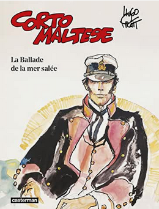

La ballade de la mer salée
La ballade de la mer salée est le premier épisode de la série
Corto Maltese. Publié mensuellement en Italie de 1967 à 1967, il sera
traduit en français en 1973, et paraîtra sous la forme d'album en 1975.
Faisant 168 pages, il a été un grand succès dès sa sortie, et jouit
aujourd'hui d'un important prestige.
Histoire
L'histoire se déroule de novembre 1913 à janvier 1915 dans le Sud-Ouest de
l'Océan Pacifique dans le contexte du début de la Première Guerre
Mondiale. Corto n'est encore dans cette histoire que l'un des multiples
personnages, et sera utilisé en tant que personnage principal pour la
première fois dans
l'album suivant . L'histoire relatée est
celle d'un important groupe de pirates, engagés par la
colonie allemande de Nouvelle-Guinée
pour trouver un moyen de les ravitailler en charbon durant toute la
guerre, quand l'Allemagne ne pourra plus leur envoyer de combustible.
L'histoire, en plus de suivre le mystérieux Moine, chef des pirates, le
cruel Raspoutine, connaissance de Corto Maltese et proche du Moine et le
lieutenant Slütter, de la Marine Allemande, se concentre sur deux
adolescents, Pandora et Caïn Groovesnore, cousins et descendants d'une
famille de riches armateurs australiens, enlevés par Raspoutine, et
devenant mûrs et adultes au fil de l'histoire. Cet album, très réputé,
remporta le prix de la meilleure oeuvre réaliste étrangère au Festival
d'Angoulême de 1976.
